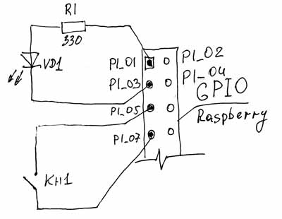
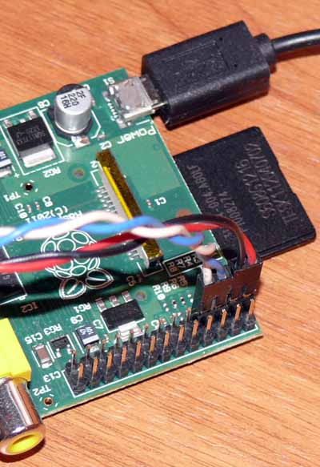

В первой части мы научились включать и выключать наш светодиод. Это самое элементарное и простое, на что способен порт GPIO. Но даже это самое простое уже можно использовать в своих целях. За примером далеко ходить ненужно. Например, на плате Raspberry светодиоды управляются точно так же, через подключение к GPIO. Просто на разъём GPIO выведены не все доступные порты. Часть этих портов используется самим Raspbery для своих нужд. Моргает светодиодами, общается с SD-картой, управляет адаптером Ethernet и т.д.
Пойдём дальше. Что получится, если мы будем повторять последовательность включения и выключения? Давайте попробуем! Слегка подправим нашу написанную программу. Откроем, написанную нами ранее программу blink.c. Теперь отредактируем её до следующего вида (или просто удалим всё написанное ранее и вставим текст отсюда):
// blink.c
// Программа мигает светодиодом 1 раз в секунду.
// Светодиод подключён к порту Р1_03
// Компиляция: gcc -o blink blink.c -lrt -lbcm2835
// Запуск: sudo ./blink
#include <bcm2835.h>
#define PIN RPI_GPIO_P1_03
//#define PIN RPI_V2_GPIO_P1_03 //для плат RPi rev. V2
int main()
{
if (!bcm2835_init()) // Инициализация GPIO
return 1; //Завершение программы, если инициализация не удалась
bcm2835_gpio_fsel(PIN, BCM2835_GPIO_FSEL_OUTP); //Устанавливаем порт Р1_03 на вывод
while(1) // Повторяем все действия, заключённые в скобки {} бесконечное число раз
{
bcm2835_gpio_write(PIN, LOW); // Устанавливаем порт в 0, светодиод горит
bcm2835_delay(500); // Ждём 500 милисекунд
bcm2835_gpio_write(PIN, HIGH); // Устанавливаем порт в 1, светодиод не горит
bcm2835_delay(500); // Ждём 500 милисекунд
}
return 0; // Выход из программы
}
Проверяем на наличие ошибок и сохраняемся. Компилируем:
gcc -o blink blink.c -lrt -lbcm2835
И запускаем:
sudo ./blink
Ну вот, теперь наш светодиод мигает. В эту программу мы внесли следующие изменения:
Посмотрели, порадовались своим успехам… А светодиод всё ещё мигает. И будет мигать до тех пор, пока не выдернете источник питания из розетки. А ещё можно прекратить выполнение программы «варварским» способом- нажать Ctrl+c. Только если нажать неудачно, то программа завершится, а светодиод продолжит гореть. Непорядок. Нужно это дело исправлять.
Ставим перед собой задачу:
Приступим. Для того, чтобы завершить выполнение программы в любое время, мы подключим к нашему Raspberry кнопочку. Пока она не нажата, светодиод будет мигать. Когда нам надоест смотреть на мигающий светодиод, мы нажимаем на кнопочку и наша программа завершается с выключенным светодиодом. Чтобы это реализовать, нам нужно выделить для кнопочки ещё один порт GPIO. Причём этот порт нужно настроить не на Вывод, а на Ввод (или другими словами не на запись, а на чтение). Этот порт будет следить за состоянием подключённой к нему кнопки, и как только на нём появится напряжение (уровень HIGH), наша программа должна завершиться. Выберем порт для этой цели. Пусть будет Р1_07.
Так же нам нужен источник сигнала для кнопки, за состояние которой мы будем следить. На этом источнике должна постоянно находиться логическая единица. Можно в качестве такого источника использовать присутствующие на Р1_01 +3,3в. Но к нему неудобно подключаться, он уже использован для питания светодиода. Мы поступим проще. Помните, я в первой части говорил, что процессор bcm2835 умеет подключать свои порты к 0, либо к +3,3в? Так вот, если мы подключим порт процессора к +3,3В посредством установки этого порта в высокое состояние HIGH, то этот порт и можно будет использовать в качестве источника сигнала "1" для кнопки. Выделим под это дело порт P1_05, который находится по соседству с Р1_07. В результате у нас должна получиться вот такая схема:

Самые внимательные могут вспомнить, что в предыдущей первой части я говорил, что мы должны всегда следить за тем, чтобы не перегрузить порт по току, и должны устанавливать токоограничивающие резисторы. А в данном случае кнопка подключена безо всего. А так, как кнопка практически не имеет никакого сопротивления, то замкнув кнопкой +3,3В с 0 мы получим короткое замыкание и сожжём нашу Малинку… Но этого не произойдёт. И вот почему. Во-первых, разработчики процессора решили снять часть ответственности с нас и сделали так, что процессор подключает свои порты к +3,3в и 0 через микроскопические резисторы, установленные в самом процессоре. Поэтому короткого замыкания не произойдёт. Ток потечёт через внутренние резисторы. Во-вторых, так же в первой части я говорил, что процессор может вообще никуда не подключать порт. Так вот. Если мы настраиваем порт на Ввод (чтение), то это как раз тот самый случай. Процессор будет читать данные с этого порта, поэтому ему нет необходимости подключать его к источнику питания, или 0. В этом режиме порт имеет достаточно высокое сопротивление. Настолько высокое, что мы в принципе можем безбоязненно подать на него прямиком 3,3 вольта от источника питания, и с ним ничего не случится. Но всё равно, если вы подключаете кнопку напрямую от источника питания, то лучше подстраховаться от всяческих бросков напряжения и поставить небольшой токоограничивающий резистор. Например тот же в 330Ом (не менее 100Ом). На будущее запомним следующие правила:
Ну и информация для общего развития. Даже в режиме чтения порт может быть подключён к +3,3В, или 0 через внутренний резистор. Это называется подтяжкой.
Теперь давайте соберём схему. В принципе у нас она собрана, осталось только подключить к портам Р1_05 и Р1_07 кнопку. Кнопку можно взять абсолютно любую, хоть выключатель от электролампочки. Я взял кнопку Reset из старого системного блока. В крайнем случае, можно просто использовать 2 проводочка из разъёма и просто замыкать их между собой. Подключаем всё к RPi таким образом (синие провода - провода к кнопке):

Откроем нашу программу blink.c и добавим в неё несколько строк. В результате она должна будет выглядеть вот так:
// button.c
// Программа мигает светодиодом 1 раз в секунду
// и завершается при нажатии на кнопку.
// Светодиод подключён к порту Р1_03
// Кнопка подключена к портам Р1_05 и Р1_07
// Компиляция: gcc -o button button.c -lrt -lbcm2835
// Запуск: sudo ./button
#include <bcm2835.h>
#define PIN RPI_GPIO_P1_03 // Определяем порт для подключения светодиода
#define PIN_OUT RPI_GPIO_P1_05 // Определяем порт для записи
#define PIN_IN RPI_GPIO_P1_07 // Определяем порт для чтения
int main()
{
if (!bcm2835_init()) // Инициализация GPIO
return 1; // Завершение программы, если инициализация не удалась
bcm2835_gpio_fsel(PIN, BCM2835_GPIO_FSEL_OUTP); // Устанавливаем порт PIN на вывод
bcm2835_gpio_fsel(PIN_OUT, BCM2835_GPIO_FSEL_OUTP); // Устанавливаем порт PIN_OUT на вывод
bcm2835_gpio_fsel(PIN_IN, BCM2835_GPIO_FSEL_INPT); // Устанавливаем порт PIN_IN на ввод
bcm2835_gpio_pud(PIN_IN, 1); // Включаем подтяжку порта PIN_IN к "0"
bcm2835_gpio_write(PIN_OUT, HIGH); // Устанавливаем порт PIN_OUT в состояние "1"
while(!bcm2835_gpio_lev(PIN_IN)) // Повторяем все действия, заключённые в скобки {} пока не будет нажата кнопка
{
bcm2835_gpio_write(PIN, LOW); // Устанавливаем порт в 0, светодиод горит
bcm2835_delay(500); // Ждём 500 милисекунд
bcm2835_gpio_write(PIN, HIGH); // Устанавливаем порт в 1, светодиод не горит
bcm2835_delay(500); // Ждём 500 милисекунд
}
bcm2835_gpio_pud(PIN_IN, 0); // Отключаем подтяжку порта PIN_IN к "0"
return (bcm2835_close ()); // Выход из программы
}
Проверяем программу на ошибки и сохраняем под новым именем button.c. Компилируем и запускаем:
gcc -o button button.c -lrt -lbcm283
sudo ./button
Светодиод начинает мигать, как и раньше. Теперь нажмём нашу кнопку (нажатие должно быть продолжительным).
Программа должна завершиться при выключенном светодиоде. Сейчас разберёмся в том, что мы добавили в программу и как оно работает.
Первое, что мы сделали, это закрепили свои названия за выбранными портами.
#define PIN_OUT RPI_GPIO_P1_05
#define PIN_IN RPI_GPIO_P1_07
Порт Р1_05, который служит источником питания для нашей кнопки, мы обозвали PIN_OUT.
Порт Р1_07, который следит за состоянием нашей кнопки, мы обозвали PIN_IN.
Не забываем, что для платы RPi версии rev.V2, необходимо добавить в определение портов V2. Раньше я помещал эти строки в код закомментированными, здесь и далее я этого делать больше не буду, следите за этим пожалуйста сами.
Следующее изменение касается установки новых портов в нужные нам режимы.
bcm2835_gpio_fsel(PIN_OUT, BCM2835_GPIO_FSEL_OUTP);
bcm2835_gpio_fsel(PIN_IN, BCM2835_GPIO_FSEL_INPT);
Т.е. установили PIN_OUT в режим Вывода (он нам даёт +3,3В для кнопки), а PIN_IN установили в режим Ввода (он будет следить за состоянием кнопки).
bcm2835_gpio_pud(PIN_IN, 1);
Этой строкой мы подключили порт PIN_IN через внутренний резистор процессора к "0" (или GND), применили подтяжку порта к 0. Это позволит повысить помехоустойчивость опроса состояния кнопки. В более ранней версии этой статьи этого сделано небыло. И хотя всё работало, но при подключении RPi к сети по Wi-Fi возникали ошибки чтения из-за того, что Wi-Fi донгл наводил в проводниках кнопки потенциал, достаточный для распознавания на порте PIN_IN логической единицы, хотя кнопка была ещё не нажата. В 5-й части цикла статей я ещё коснусь этого вопроса.
Далее, мы установили порт PIN_OUT в высокое состояние:
bcm2835_gpio_write(PIN_OUT, HIGH);
Теперь на выходе порта Р1_05 у нас присутствует логическая единица в виде напряжения в +3,3В.
И ещё мы изменили содержимое функции while()
while(!bcm2835_gpio_lev(PIN_IN)) ;
Мы поместили в условие выполнения цикла функцию чтения состояния порта PIN_IN.
Функция bcm2835_gpio_lev() возвращает значение состояния выбранного порта, т.е. читает его состояние. В нашем случае она читает состояние порта PIN_IN, который в соответствии с нашим определением является портом Р1_07. Если на ножке этого порта присутствует логическая единица, или по другому +3,3В, то эта функция возвращает 1 (помните, в нашей предыдущей программе какраз на этом месте и стояла 1?). А если на ножке порта логический ноль (или напряжение 0В), то эта функция и возвращает 0. Восклицательный знак перед этой функцией обозначает инверсию результата. В булевой математике он соответствует функции «НЕ». Т.е. !1=0, а !0=1. Другими словами изменяет результат на противоположный. Вот и получается, что наш светодиод будет мигать до тех пор, пока результатом чтения состояния порта PIN_IN будет НЕ единица, а собственно Ноль. А НЕ единица будет до тех пор, пока мы не нажмём кнопочку. Как мы только нажмём на кнопку, то логическая единичка с порта PIN_OUT придёт на порт PIN_IN и функция чтения состояния этого порт возвратит единичку. Цикл прервётся и программа завершится. А так, как последним состоянием светодиода в этом цикле было «выключено», то программа завершится именно с выключенным светодиодом. Так же стоит отметить, что чтение порта PIN_IN в нашей программе выполняется 1 раз в секунду. Именно поэтому нажатие кнопки должно быть продолжительным, чтобы гарантировано уложиться в эту 1 секунду и попасть на чтение порта. Разумеется, есть масса способов обойти это неудобство, но пока мы не будем заострять на этом внимание, чтобы не усложнять программу и разобраться в сути чтения информации с порта.
Ну и появилась ещё одна новая функция, которой мы ранее не пользовались.
bcm2835_close ()
Эта функция закрывает библиотеку, освобождает выделенную под использование GPIO память и приводит состояние портов GPIO к исходному.
Другими словами корректно завершает работу с портами. Мы её поместили в return потому, что эта функция возвращает значение 1, если всё прошло успешно, и 0, если возникли какие-то проблемы. Этой функцией нужно пользоваться всегда при завершении работы с портами. Это, как правило хорошего тона - уходя говорить: «до свидания». Так что эту функцию можно смело ставить и во все ранее написанные нами программы.
Ну вот, сегодня мы научились читать из порта. И хотя мы читали состояние лишь одной кнопки, но именно подобным образом можно прочитать и последовательность бит от любого другого устройства, подключённого к этому порту и передающего ему какую либо информацию. Но самое главное- это принцип. И мы в нём сегодня разобрались.
Но на этом мы пока не будем разбирать нашу схему со светодиодом. Он нам поможет разобраться ещё в нескольких интересных и нужных вещах. И об этом речь пойдёт в следующих частях серии «GPIO для чайников».
А пока продолжайте самостоятельно изучать язык программирования Си. Ну и задание для самостоятельного выполнения- разработайте программу, которая бы включала светодиод при нажатой кнопке и выключала при отпущенной.